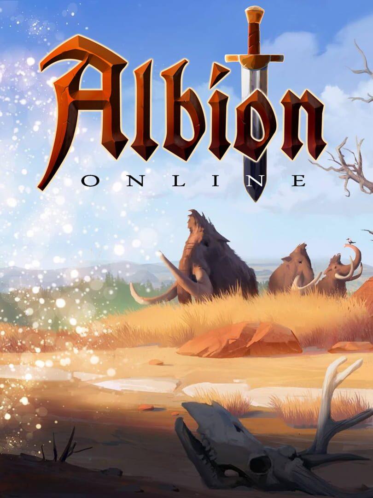

Albion Online
Details
|  | |
| Spielzeit | 3m 0s |
| Letzte Aktivität | 15.12.2020 1:37:10 |
| Hinzugefügt | 04.12.2020 22:01:21 |
| Modifiziert | 10.11.2022 12:26:40 |
| Fertigstellungsstatus | Gespielt |
| Bibliothek | Steam |
| Quelle | Steam |
| Plattform | PC (Windows) |
| Veröffentlichungsdatum | 16.05.2018 |
| Community Bewertungen | 76 |
| Kritiker Punkte | 72 |
| Benutzerwertung | |
| Genre | Free to Play |
| Entwickler | Sandbox Interactive GmbH |
| Verleger | Sandbox Interactive GmbH |
| Eigenschaft | Achievements Multiplayer Online Pvp 🦢 Cross Platform |
| Links | Communityhub Diskussionen Guides Neuigkeiten Shopseite PCGamingWiki Errungenschaften |
| Tag | |
Beschreibung
Albion Online is a sandbox MMORPG set in an open medieval fantasy world. The game features a player-driven economy where nearly every item is player-crafted. Combine armor pieces and weapons suited to your playstyle in a unique, classless "you are what you wear" system. Explore the world, take on other adventurers in thrilling battles, conquer territories, and build a home.

Craft. Trade. Conquer.
Dive in now and become part of a living fantasy world where everybody matters.

From basic tools and clothes to mighty armors and powerful weapons – nearly every item in the game is crafted by players, in player-constructed buildings, from resources gathered by players. Buy, sell, and trade with other players at local marketplaces all across the world of Albion. Craft rare and powerful items, then sell them to the highest bidder and grow your fortune.

In Albion Online's classless combat system, you are what you wear. The weapons and armor you use define your skills, and switching playstyles is as easy as switching gear. Test out new equipment anytime and change up your weapons, armor, and mounts to suit any situation. Hone your character’s skills by crafting new items, or by simply using your favorite equipment.

From solo to small-group to large-scale battles, you'll need strategy, tactics, and skill to prevail. Test yourself against other adventurers in high-risk, high-reward full-loot fights. Level your combat specializations, create unique builds with complementary skills, and use every tool at your disposal to emerge victorious.

Join a guild and carve out your own piece of Albion in massive open-world battles. Claim territories for access to incredible resources, construct guild halls, and conquer entire cities to levy taxes and grow your wealth. Build a Hideout to give your guild a powerful home base deep in dangerous lands. Lead your guild to victory in the Crystal League, and track your progress against other guilds worldwide on a constantly-updated seasonal leaderboard.

Claim a city plot or private island and make it your own. Grow crops to sell or craft into food, raise your own livestock and mounts, and place crafting stations for other players to use for a fee. Stock your house with custom furniture and trophies, build chests to store your growing collection of loot, and hire laborers to keep everything at your homestead running smoothly.

From small scouting bands to massive bosses, from dungeons to full-blown faction bases, the inhabitants of Albion’s open world await your challenge. Take on six different factions, each with different enemies that require unique strategies. Partake in solo or group Expeditions, or seek out the ultimate thrill by facing demons and other players alike in Hellgates and Corrupted Dungeons.

Explore five beautiful biomes, each with its own challenges. Gather valuable raw materials for crafting, or cast a line into Albion's waters to catch rare and valuable fish. Seek out randomly generated solo and group dungeons and slay powerful foes for valuable loot. Enter the mystical Roads of Avalon to discover ever-changing paths between distant zones, face off against long-dormant foes, and build your own Hideout in this vast and ancient land.

Albion Online is a true cross-platform MMO experience. Whether you prefer Windows, Mac, Linux, or even Android or iOS (mobile currently in beta), one account lets you play on all platforms, with all players on a single shared server. Forge alliances with other players worldwide and take part in massive battles to determine the fate of Albion.
Craft. Trade. Conquer.
Dive in now and become part of a living fantasy world where everybody matters.
Key Features
From basic tools and clothes to mighty armors and powerful weapons – nearly every item in the game is crafted by players, in player-constructed buildings, from resources gathered by players. Buy, sell, and trade with other players at local marketplaces all across the world of Albion. Craft rare and powerful items, then sell them to the highest bidder and grow your fortune.
In Albion Online's classless combat system, you are what you wear. The weapons and armor you use define your skills, and switching playstyles is as easy as switching gear. Test out new equipment anytime and change up your weapons, armor, and mounts to suit any situation. Hone your character’s skills by crafting new items, or by simply using your favorite equipment.
From solo to small-group to large-scale battles, you'll need strategy, tactics, and skill to prevail. Test yourself against other adventurers in high-risk, high-reward full-loot fights. Level your combat specializations, create unique builds with complementary skills, and use every tool at your disposal to emerge victorious.
Join a guild and carve out your own piece of Albion in massive open-world battles. Claim territories for access to incredible resources, construct guild halls, and conquer entire cities to levy taxes and grow your wealth. Build a Hideout to give your guild a powerful home base deep in dangerous lands. Lead your guild to victory in the Crystal League, and track your progress against other guilds worldwide on a constantly-updated seasonal leaderboard.
Claim a city plot or private island and make it your own. Grow crops to sell or craft into food, raise your own livestock and mounts, and place crafting stations for other players to use for a fee. Stock your house with custom furniture and trophies, build chests to store your growing collection of loot, and hire laborers to keep everything at your homestead running smoothly.
From small scouting bands to massive bosses, from dungeons to full-blown faction bases, the inhabitants of Albion’s open world await your challenge. Take on six different factions, each with different enemies that require unique strategies. Partake in solo or group Expeditions, or seek out the ultimate thrill by facing demons and other players alike in Hellgates and Corrupted Dungeons.
Explore five beautiful biomes, each with its own challenges. Gather valuable raw materials for crafting, or cast a line into Albion's waters to catch rare and valuable fish. Seek out randomly generated solo and group dungeons and slay powerful foes for valuable loot. Enter the mystical Roads of Avalon to discover ever-changing paths between distant zones, face off against long-dormant foes, and build your own Hideout in this vast and ancient land.
Albion Online is a true cross-platform MMO experience. Whether you prefer Windows, Mac, Linux, or even Android or iOS (mobile currently in beta), one account lets you play on all platforms, with all players on a single shared server. Forge alliances with other players worldwide and take part in massive battles to determine the fate of Albion.